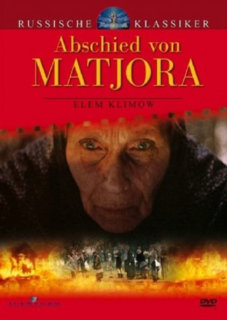

#9883 Abschied von Matjora
 
 IMDB-Wertung: 7.4 / 10
IMDB-Wertung: 7.4 / 10  Metascore: 0
Metascore: 0 
In einem sowjetischen Inseldorf leben die Einwohner seit Jahrhunderten in friedlichem Einklang mit der Natur und pflegen eine traditionelle Lebensweise. Doch der technische Fortschritt macht auch vor dieser abgelegenen Gegend nicht halt: Für den Bau eines gigantischen Wasserkraftwerks soll das komplette Gebiet überflutet werden. Nicht alle Dorfbewohner ergeben sich widerstandslos
Jahr: 1983
Dauer: 65 Minuten
FSK: 12
Land: Soviet-Union Studio: Filmverlag der AutorenTonspuren:
Untertitel:
Auflösung: SD (576x432) Größe: 699 MB
Genre: Drama
Regisseur: Elem Klimov
Drehbuch: Valentin Rasputin, Larisa Shepitko, Rudolf Tyurin, German Klimov
Soundtrack: Vyacheslav Artyomov, Alfred Shnitke
Darsteller:
- Stefaniya Stanyuta als Darya
- Lev Durov als Pinegin
- Aleksey Petrenko als Voronzov
- Leonid Kryuk als Petrukha
- Vadim Yakovenko als Andrei
- Yuriy Katin-Yartsev als Bogodul
- Mayya Bulgakova als
- Naydan Gendunova als
- Galina Dyomina als
- Lyubov Malinovskaya als
- Lyudmila Polyakova als
- Igor Bezyayev als
- Denis Lupov als Kolia
- Anna Kustova als
- Nadezhda Pogorishnaya als
- Mikhail Bychkov als
- Yu. Puchkov als
- V. Klap als
Datei: X:\1983\Abschied von Matjora (1983, FSK12, 576x432) CD1.avi seit 08.11.2018
Festplatte: HD 1980-1986
 Es gibt insgesamt 35 Filme in der Gruppe '1983'
Es gibt insgesamt 35 Filme in der Gruppe '1983'